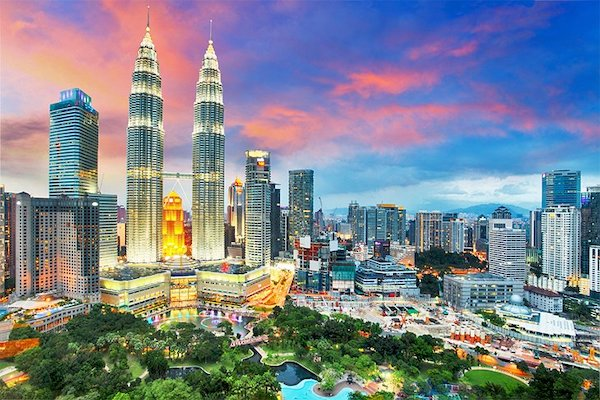

Malaysia, truly Asia
Malaysia is a tropical country located at South-East Asia, known for
its multiracial society.

More information

Malaysia's demography consist of Malay, Chinese, Indian and
indigenous groups.
As a multiracial country, Malaysian cuisine is a mixture of all
culture.
Located on the Equator line makes Malaysia a tropical country, with
only summer and rainy monsoon season.
Malaysia is famous for its beautiful islands across the entire
country.
Malaysia is a country unlike any other: Full of promise and fragility.
Its history, cultural and religious diversity make it a rich,
compelling and surprising land.
-Tariq Ramadan